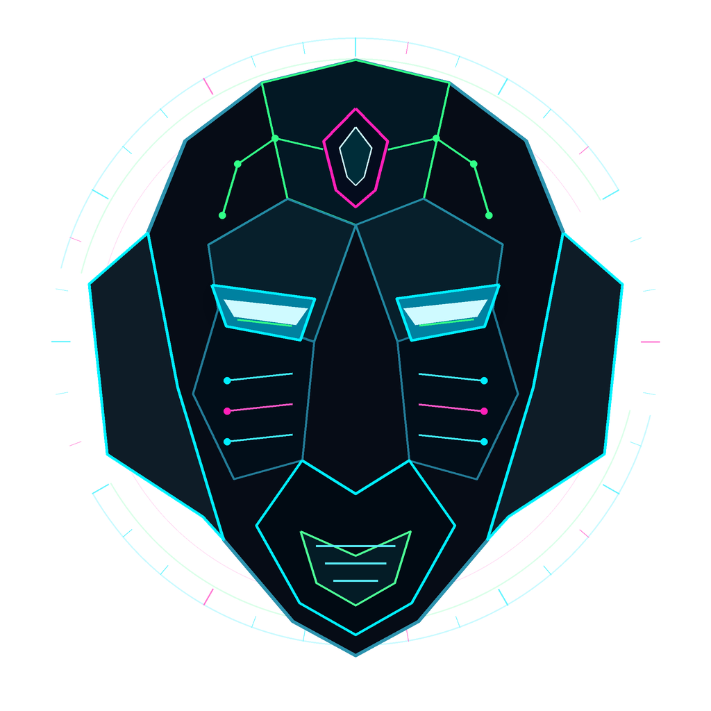

Nativer EFI Manager
Eigene sichtbare Systemauswahl mit dynamischer Hardwareerkennung, Maus, Tastatur und ehrlichen Prebootdaten.
VERIFIEDINDEPENDENT OPERATING SYSTEM PROJECT // CH-2026
Ein Betriebssystemprojekt von Oliver. Entwickelt für reale PCs – mit eigener Bootoberfläche, sicherem Zugang, Unified Shell und einer klaren technischen Identität.
Aktuell Linux-/Ubuntu-basiert. Kein fertiger eigener Kernel und noch kein öffentlicher ISO-Download.

01 // SYSTEM DEFINITION
JARVIS SYSTEM ersetzt den normalen sichtbaren Weg von der Betriebssystemauswahl bis zu Anmeldung, Shell, Appsteuerung und Systemverwaltung durch eigene JARVIS-Komponenten.
Eigene sichtbare Systemauswahl mit dynamischer Hardwareerkennung, Maus, Tastatur und ehrlichen Prebootdaten.
VERIFIEDEigener PAM-/Fingerprint-Supervisor, durchgehender Login-Handoff und klar definierte Recoverypfade.
VERIFIED IN LABFeste JARVIS-Oberfläche mit Command Core, Systemansichten, Appsteuerung und eigenem Frame Core.
VERIFIED IN LABCPU, RAM, Netzwerk, Speicher, Energie und Sensoren aus realen Quellen. Unbekanntes bleibt sichtbar N/A.
REAL SOURCESKeine Laptop-Maßanfertigung: Capability Discovery, sichere Fallbacks und eine verbindliche Bare-Metal-Matrix.
RELEASE GATEDas langfristige Ziel ist ein System für Entwicklung, Systemengineering und kontrollierbare technische Arbeit.
IN DEVELOPMENT02 // OFFICIAL VISUAL IDENTITY
Beide Köpfe gehören zur visuellen Identität des Projekts. Der geometrische Core steht für Präzision und Systemlogik. Der metallische Guardian bewacht die Grenze zwischen Hardware, Bootauswahl und JARVIS OS.
Die sichtbare Instanz des nativen Bootmanagers – dort, wo reale Hardware erkannt und das Zielsystem gewählt wird.
PREBOOT DOMAINDie technische Signatur für Laufzeit, Login, Shell, Dokumentation und den zusammenhängenden JARVIS-Auftritt.
RUNTIME DOMAIN03 // VERIFIED PROJECT STATE
Alle Angaben haben einen Standzeitpunkt. Animationen sind Gestaltung – technische Aussagen basieren auf dokumentierten Projektprüfungen.
ANIMATED SIGNAL FABRIC // DECORATIVE, NOT TELEMETRY
Öffentlich sind ausschließlich Aktivstatus, Dauer, Puls und Prozessanzahl. Keine Chats, Prompts, Befehle, Dateinamen, Audioinhalte, Hardware-IDs oder IP-Adressen.
CONTENT: ZEROInterne Engineering-Kandidaten werden geprüft und geschützt. Ein Download wird erst geöffnet, wenn Installation, Recovery, Secure Boot und Hardwarematrix den Freigabestandard erfüllen.
04 // DEVELOPMENT TRANSMISSIONS
Keine leeren Ankündigungen: nachvollziehbare Schritte, ehrliche Grenzen und der aktuelle technische Stand.
Die JARVIS-Community besitzt jetzt einen bereinigten Kanal- und Rollenaufbau, eine verpflichtende Interessenabfrage vor dem Beitritt und automatische, nicht privilegierte Rollenzuweisung.
TECHNISCHEN BERICHT LESEN →Der Discord-Server von JARVIS SYSTEM ist mit klaren Bereichen für Entwicklung, Tests, Community und Gaming sowie einem sicheren Rollen- und Onboardingmodell gestartet.
TECHNISCHEN BERICHT LESEN →Domain-Property, Sitemap und HTTPS wurden bestätigt. Google führt die öffentliche Startseite nun als indexiert und für Suchergebnisse berechtigt.
TECHNISCHEN BERICHT LESEN →JARVIS SYSTEM wird für unterschiedliche reale x86-64-PCs gebaut. VM-Erfolge bleiben Vorstufen; eine reale Hardwarematrix ist Release-Pflicht.
TECHNISCHEN BERICHT LESEN →Hover, Linksklick, flüssige Kartenhebung und animierte Signalstruktur wurden in OVMF real geprüft.
TECHNISCHEN BERICHT LESEN →05 // JARVIS KNOWLEDGE CORE
Eigenständige, dauerhaft indexierbare Fachseiten erklären Architektur, Entwicklung, Roadmap, Community, Gründerstory und offene Fragen ohne Marketing-Nebel.
Definition, Komponenten, Grundlage und Ziel des Betriebssystemprojekts.
SYSTEMPROFIL → ARCH-02UEFI-Bootmanager, Runtime, Shell, Authentifizierung und echte Telemetrie.
ARCHITEKTUR → DEV-03Reproduzierbare Builds, VM- und Hardwaretests, Dokumentation und Release-Gates.
PROZESS → LOG-04Datiertes Entwicklungslog mit detaillierten technischen Einzelberichten.
TRANSMISSIONS → MAP-05Hardwareportabilität, Secure Boot, Recovery und Community-Release.
NÄCHSTE GATES → ID-06Oliver-Frank Pristaff und die Geschichte hinter JARVIS SYSTEM.
STORY → FAQ-07Linux-Basis, eigener Kernel, ISO, Hardware, Dualboot und Datenschutz.
FAQ → COM-08Discord-Struktur, Pre-Join-Onboarding, automatische Rollen und Sicherheitsmodell.
COMMUNITY → SEC-09Reale öffentliche Infrastrukturdaten, globale Threat-Snapshots und der ehrliche Status des geplanten JARVIS-Honeypots.
THREAT MAP →06 // ROADMAP
Eigene Systemidentität, native Anmeldung, Unified Shell und Systemflächen.
Eigener Bootmanager und installierbares Engineering-Medium.
Intel, AMD, NVIDIA, Netzwerk, Speicher, Displays und Eingabe auf Bare Metal.
Signaturpfad, Offline-Reparatur, Updates und belastbarer Rollback.
Dokumentation, Testerprogramm, Downloadfreigabe und Community-Infrastruktur.
07 // THE STORY BEHIND JARVIS SYSTEMS
Mein Name ist Oliver-Frank Pristaff. Ich bin 22 Jahre alt, komme aus der Schweiz und bin der Gründer des Projekts JARVIS Systems.
Mein Weg begann nicht in einem Informatiklabor, sondern im Handwerk. Nach meiner Ausbildung arbeitete ich als Maurer, besonders im Bereich Kundenmaurerarbeiten. Dort lernte ich, dass ein tragfähiges Ergebnis nicht durch grosse Worte entsteht, sondern durch Planung, Genauigkeit und viele sauber ausgeführte Schritte.
Vier Jahre meines Lebens verbrachte ich in einem Heim. Diese Zeit war schwer und hat mich geprägt. Sie gehört zu meiner Geschichte, aber sie definiert nicht meine Grenzen. Ich lernte, weiterzumachen, Verantwortung für meinen eigenen Weg zu übernehmen und aus schwierigen Ausgangslagen etwas Eigenes aufzubauen.
Technik wurde zu dem Ort, an dem aus Neugier echtes Verständnis entstand. Neben der Arbeit baute ich Computer zusammen, richtete Netzwerke und Server ein und beschäftigte mich immer tiefer mit Hardware, Linux, Windows, Virtualisierung, Heimservern, Datacentern, künstlicher Intelligenz und Softwareentwicklung. Ich wollte nie nur einen Computer besitzen. Ich wollte verstehen, wie er wirklich funktioniert.
WHY JARVIS SYSTEMS
Mit jedem eigenen Projekt entstand eine neue Umgebung. Daraus entwickelte sich eine grössere Frage: Warum alle Ideen an bestehende Systeme anpassen, wenn stattdessen eine gemeinsame eigene Plattform entstehen kann? Diese Vision erhielt einen Namen: JARVIS Systems.
THE OPERATING SYSTEM
Mein Ziel ist nicht, Linux nur anders aussehen zu lassen. JARVIS OS soll sich als vollständiges eigenes Produkt anfühlen – mit eigener Bootumgebung, Anmeldung, Shell, Systemsteuerung und Designsprache. Ein System, das nicht um Programme herum gebaut wird, sondern um den Menschen, der damit arbeitet.
ENGINEERING PHILOSOPHY
Wenn Daten vorhanden sind, zeigt JARVIS sie. Wenn etwas nicht messbar ist, steht dort N/A statt einer erfundenen Zahl. Das System soll technisch und kraftvoll wirken, aber niemals vortäuschen, weiter zu sein, als es wirklich ist. Jede Funktion soll gebaut, geprüft und dokumentiert werden.
THE LONG-TERM VISION
JARVIS Systems soll langfristig eine gemeinsame Plattform für eigenständige Produkte werden. Alle Bereiche teilen dieselbe Philosophie, dieselbe technische Handschrift und dieselbe visuelle Identität.
PERSONAL MOTTO„Grosse Projekte entstehen nicht durch Perfektion am ersten Tag, sondern durch tausende kleine Schritte, die konsequent in dieselbe Richtung gehen.“— Oliver-Frank Pristaff
08 // COMMUNITY UPLINK
Der offizielle JARVIS-Discord ist online: verpflichtendes Pre-Join-Onboarding, automatische Interessenrollen, Projektupdates, strukturierte Testgruppen, Entwicklerbereiche, Community-Talks und Gaming in einer gemeinsamen Kommandozentrale.